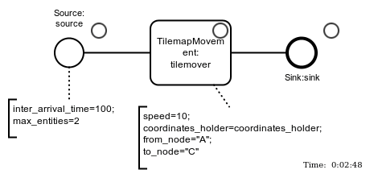
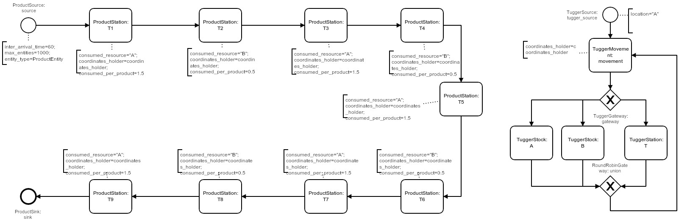
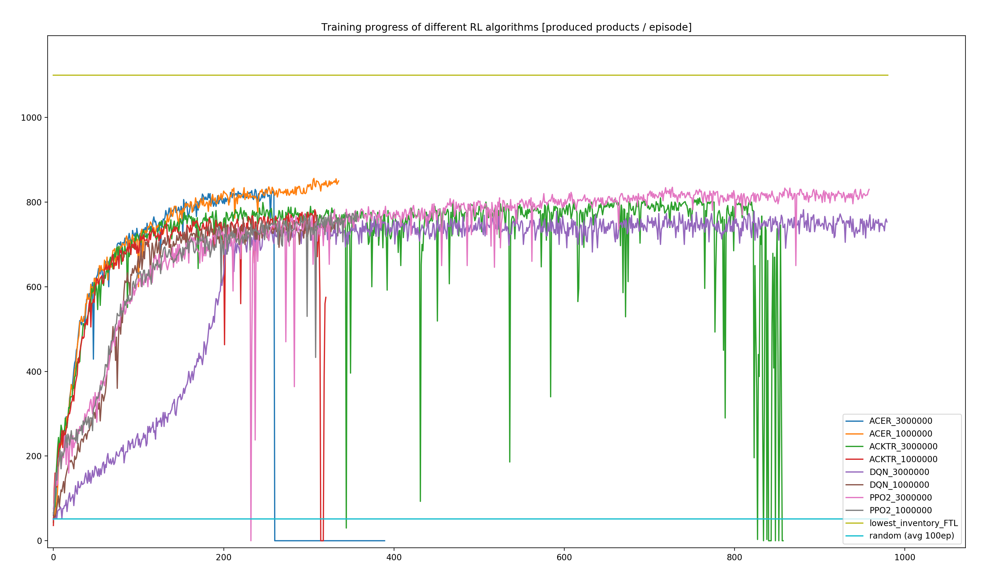

Towards the Productive Application of Reinforcement Learning in Logistics:
A Case Study on Assembly Line Material Provision Planning
Wladimir Hofmann, Clemens L. Schwarz, Fredrik Branding
Lufthansa Industry Solutions AS GmbH
- Motivation
- Basic Concepts
- Case-Study
Motivation
- Reinforcement Learning: ML for deriving complex interaction sequences in dynamic environments
- learning from experience to maximize a reward signal, balancing exploration and exploitation
- successful applications e.g. in robotics and gaming
- complexity, uncertainty, multi-dimensionality => common challenges in logistics
How can an open-source tool-stack for training and application of reinforcement learning algorithms in logistics look like?
Basic Concepts: RL
- Agent & Environment
- Observation, Action, Reward
- Action- and Observation-space
- Python: OpenAI Gym interface
- many interactions needed for training
Basic Concepts: DES
Basic Concepts: DES + RL
- frictionless wrapping of Casymda models as gym-environments
- compatible with provided standard RL algorithm implementations
Case-Study
- in-plant material provision planning
- Klenk and Galka, 2019
- production line with 9 assembly stations
- 2 material types, 1 tugger train
Case-Study: Processes
- left: product flow
- right: tugger train, moving between locations 
Case-Study
- goal: maximize throughput (24h episode)
- bottleneck: tugger train (transport capacity limit)
- observation-space: 48 values (5 per station, 3 per tugger)
- action-space: next movement target (11 alternatives)
- challenges: uneven material demand, transportation capacity limits, tightly coupled production process
Case-Study: Reward (-engineering)
-
number of produced products in the episode?
(>1000 actions before the reward => sparse!)
-
each successful delivery?
(2 actions => less sparse, but exploitable)
- compromise: completion of each product (~20 steps)
- DES: varying step duration => time-dependent negative reward per step (increased over time)
Case-Study: RL-Algorithms
- stable-baselines: different implementations of standard algorithms
- version 3 is up-to-date (we had used an older version)
- evaluated implementations, suited for Discrete spaces: ACER, ACKTR, DQN, PPO2
Case-Study: Heuristic
- hand-coded heuristic for comparison
- simple approach: complete delivery of 5 units to the station with the lowest inventory
- maximize utilization of the bottleneck
Case-Study: Heuristic

Case-Study: RL Training
- separated runs for each algorithm
- 3 * 10e6 gym-steps => up to ~2.5h (on a notebook, we're not OpenAI)
- variable time per gym-step => variable number of steps per 24h-episode
- 350 - 1000 episodes = "days" of experience
Case-Study: RL Performance
Case-Study: Our best agent

Conclusion / Outlook
- best agent: ~78% of the (near-optimal) heuristics
- hyperparameter tuning, scalability (ray)
- extended, published gym-environments for logistics benchmarks
- interesting environment extension: multiple tuggers (observation-space: repeated values, equivariance, Graph Neural Networks ?)
Thank you for your attention.
github-repo | blog-post
slides: reveal.js